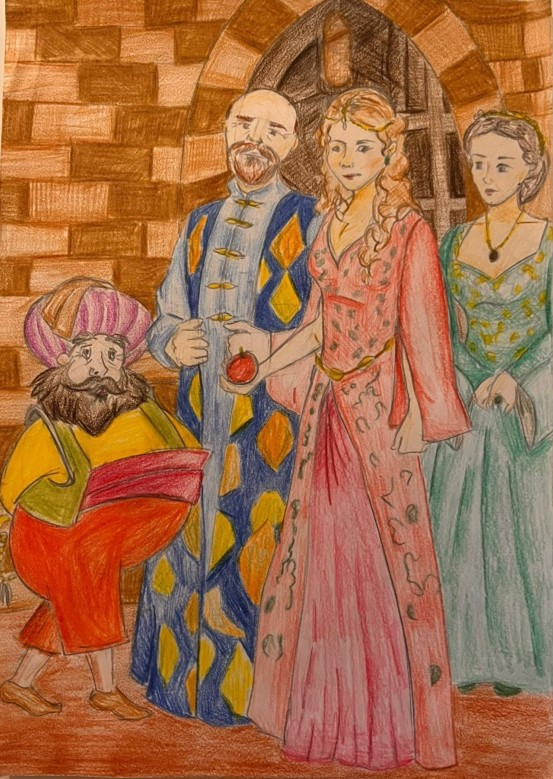

Ben Nardaniye Hanım… Türk masallarının Pamuk Prensesi sayılırım. Başımdan geçenler, aslında dünya üzerinde yaşayan her güzel ve iyi kızın başından geçebilecek olaylardır. Bir babanın on iki, on üç yaşlarında bir kızıydım. Annem ölünce babam, benim de tavsiyemle hocam olan bir kadınla evlendi. Fakat gelin görün ki bu kadın beni kıskandı, hazırladığı tuzlu çöreği yedirdikten sonra içine bir yılan yavrusu koydurduğu testiden su içirdi. Bilmeden yılan yavrusunu yutunca karnım şişti. Kıskanç üvey annem, babamı benim çocuğum olacağına inandırdı. Bunun üzerine namusuna düşkün olan babam da beni gezmeye götürüp dağ başına terk etti. Dağ başında çaresiz beklerken içimden bir yılanla yavruları çıkmaz mı? Ortalık kararınca ışık yanan bir eve sığındım. Meğer burası Kırk Haramilerin eviymiş. Kırk Haramiler beni kendilerine kardeş yaptılar. Kör olası annem ölmediğimi öğrenip sığındığım eve kiraz satan bir kadın kılığında geldi. Kendisinden yarım kilo kiraz aldım, kirazlardan kırk kuşuma yedirdim kırkı da zehirlenip öldü. Zehirli kirazları yemeyip de ölmediğimi öğrenen üvey annem bu kez de sakız satan bir kadın kılığında geldi sığındığım eve. Satın aldığım sakızı çiğneyince kendimden geçip yere düştüm. Beni kendilerine kardeş yapan Kırk Haramiler öldüğümü sanıp beni bir tabuta koydular. Tabutu yüklenip götürürlerken karşılarına çıkan bir şehzade tabutu ister, kardeşlerim de verirler. Şehzade tabutu gömmeden kendi evinde saklar. Şehzade merak edip tabutu açınca ben ay parçası Nardaniye’yi görüp bana âşık oldu, aşkından sararıp soldu. Meraklı bir lala sayesinde boğazıma takılıp kalan zehirli sakızdan kurtulup dirildim. Şehzade ile kırk gün kırk gece süren bir düğünle evlendim. Kocam, babamı sarayına davet etti ve benim sağ olduğumu gördü. Yaptığından bin pişman olan babamla kavuştum. Benim öldürmeye çalışan kıskanç üvey annem, şehzade tarafından kırk katırın kuyruğuna bağlanarak cezalandırıldı. Böylece iyiler kazanırken kıskançlık eden kötüler kaybetti.
